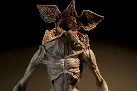

Demogorgon is a deity or demon, associated with the underworld and envisaged as a powerful primordial being, whose very name had been taboo. Although often ascribed to Greek mythology, the name probably arises from an unknown copyist's misreading of a commentary by a fourth-century scholar, Lactantius Placidus. The concept itself though can be traced back to the original misread term demiurge.
